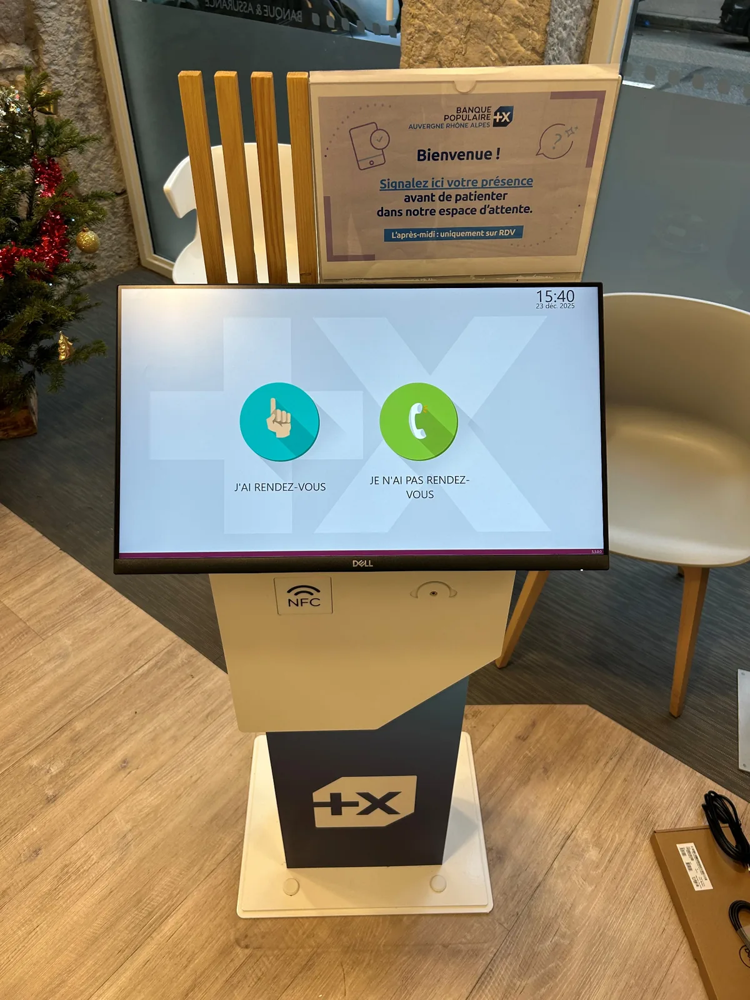

Environnement bancaire
Support de proximité en banque
- Contexte
- Support de proximité au siège Banque Populaire à Lyon, puis interventions dans des agences bancaires.
- Diagnostic
- Qualification des demandes des utilisateurs et contrôle des postes, périphériques et connexions.
- Intervention
- Prise en charge sur site, installation et maintenance du matériel, assistance aux utilisateurs et suivi des incidents.
- Compétences mobilisées